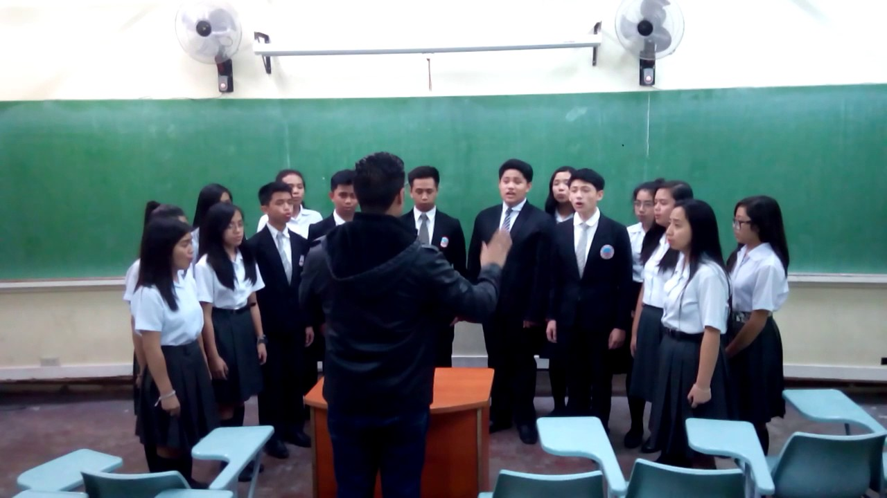
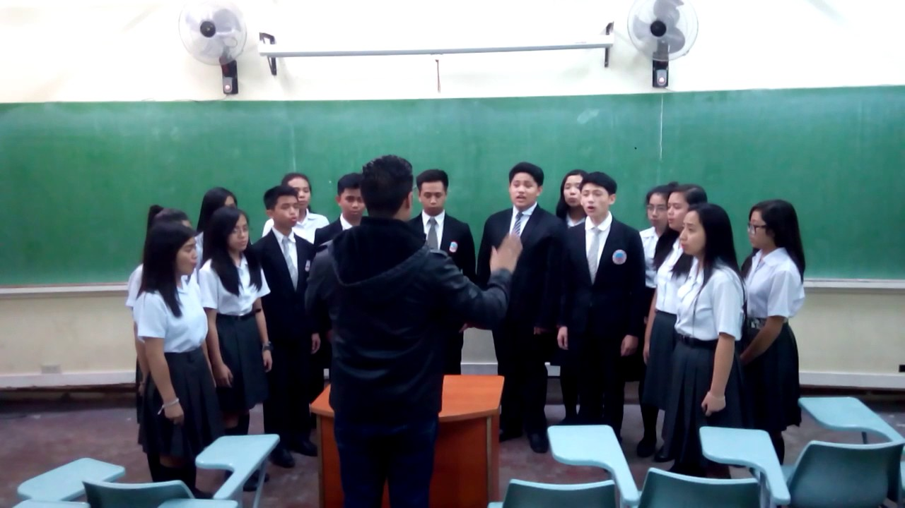

"Welcome to the University of Baguio Junior High School"
University of Baguio Preparatory HighSchool is Located at E and F Building
UB Loyalty Song
UB dear our Alma Mater
Nest of love and care all free
Pride of our mountain city
Dear to us you'll ever be
And thy fame which we all share
Binds us now and ever will
To thy banner of red and white
And thy uniform of gray
Loved by us forever be
Loyal ever we will be.
When we wander far or near
Loyal still to thee we'll be
With these hands you helped to strengthen
We will work and strive for thee
With our voices loud and clear
We will sing our songs of thee
With our wishes good and strong
We will hope and pray for thee
With the wisdom God has sown
We will win more fame for thee

 
